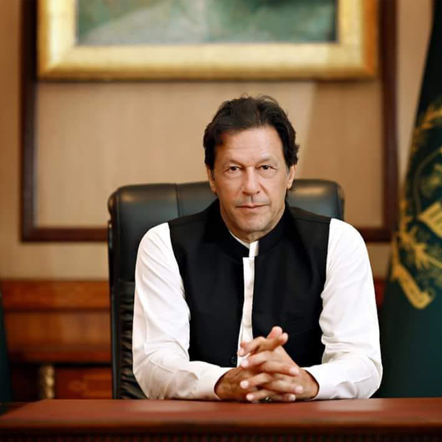

IMRAN KHAN
Prime Minister of Pakistan

Imran Khan, born on October 5, 1952, is a Pakistani politician serving as the 22nd Prime Minister of Pakistan. He is a member of Pakistan Tehreek-e-Insaf (PTI) and is known for his dynamic leadership style.
Early Life and Background:
- Imran Khan was born into a humble family and pursued a career in cricket before entering politics.
- He achieved international fame as a cricketer and captained the Pakistan national cricket team to victory in the 1992 Cricket World Cup.
Political Journey:
- Imran Khan founded Pakistan Tehreek-e-Insaf (PTI) in 1996 and gradually rose to prominence in Pakistani politics.
- He became the Prime Minister of Pakistan in 2018 after winning the general elections.
Prime Ministerial Tenure:
- His tenure as Prime Minister has been marked by various policy initiatives, reforms, and efforts to improve governance and transparency.
- He has focused on issues such as healthcare, education, and poverty alleviation.
Leadership Style and Ideology:
- Imran Khan is known for his charismatic leadership style and his commitment to fighting corruption and promoting accountability.
- He has advocated for stronger ties with neighboring countries and peace in the region.
Economic Reforms and Development:
- During his tenure, initiatives have been launched to boost economic growth and investment in Pakistan.
- Efforts have been made to attract foreign investment and improve the business environment.
Foreign Policy and International Relations:
- His government has worked on strengthening Pakistan's relations with various countries and has played a role in regional and international diplomacy.
- Efforts have been made to address global challenges such as climate change.
Challenges and Achievements:
- Imran Khan's leadership has faced challenges and controversies, but he has also achieved significant milestones in Pakistani politics.
- His vision for a prosperous and peaceful Pakistan continues to shape the country's future.